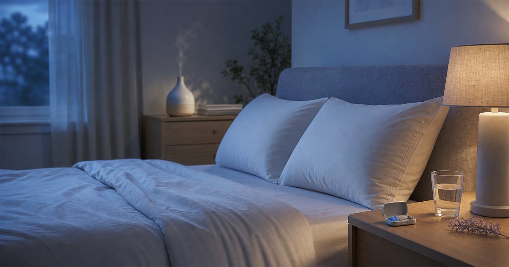

睡前 30 分鐘的低壓居家儀式：耳塞、枕頭、香氛與燈光怎麼搭
睡前準備不一定要複雜。把聲音、枕頭、床邊氣味與光線分開處理，就能建立一個更容易維持的夜間節奏。

先把睡前問題分成聲音、支撐、光線與氣味
很多人整理睡前環境時，會一次買很多東西：耳塞、枕頭、香氛、床包、燈具、助眠小物。結果每一樣都像有用，真正每天能維持的卻很少。比較好的方式，是先把問題拆成四個層次。
耳根清靜處理的是聲音干擾；BETENSH、紳娜多家居與禾肯居家屬於床墊、枕頭與床寢支撐；大檜仁心、THANN 處理氣味邊界；燈后則負責睡前光線。分清楚之後，你會知道自己需要先調整哪一層，而不是全部一起買。
- 吵雜：先看耳塞與環境聲音。
- 肩頸不舒服：先看枕頭高度與床寢支撐。
- 難收心：先看燈光與手機使用位置。
耳塞適合處理聲音邊界，不等於解決所有睡眠問題
耳塞的價值在於降低突發聲音的干擾，例如鄰居聲、交通聲、室友作息或旅途中不熟悉的環境。耳根清靜這類耳塞選項，適合放進旅行包、床邊抽屜或短期住宿清單。
但耳塞不是所有夜晚問題的答案。若是作息、壓力、身體不適或長期睡眠困擾，仍然需要回到生活節奏或專業協助。選耳塞時，重點是尺寸、材質、配戴舒適度與是否容易清潔，而不是只看隔音數字。
- 先短時間試戴，再決定是否長時間使用。
- 旅途中可準備備用耳塞，但不要忽略安全提醒與鬧鐘設定。
枕頭與床寢先看支撐感，再看飯店感
床寢最常見的迷思，是把「蓬鬆」等同於「舒服」。實際使用時，枕頭高度、肩頸落點、床墊軟硬與床包材質，都會影響夜間翻身和隔天起床的感受。BETENSH 可以作為床墊升級選項，紳娜多家居與禾肯居家則適合處理枕頭、床包、被套與保潔墊。
如果預算有限，先檢查枕頭與床包，不一定急著換床墊。枕頭太高或太低，床包太悶或太滑，都可能比床架更常干擾夜間舒適度。先處理每天直接接觸的東西，通常更有效率。
- 先看睡姿與枕頭高度，再看材質名稱。
- 床包、保潔墊與枕套要考慮換洗頻率。
香氛要輕，不要在睡前變成另一種刺激
睡前香氛不宜太重。大檜仁心的木質香調、THANN 的精油與身體保養延伸，都可以作為睡前空間的氣味選項，但前提是味道不讓你分心，也不影響同住者。
如果你對氣味敏感，先從離床較遠的位置開始，或只在睡前一段時間使用。香氛的角色是建立夜晚和白天的界線，不是用氣味逼自己放鬆。任何讓你一直注意到它的味道，都不適合放在床邊。
- 小臥室用量要少，避免味道過度累積。
- 蠟燭和火源需特別注意安全，不適合無人看管。
燈光越晚越簡單，手機位置也要一起調整
睡前燈光不需要戲劇化，但要能讓空間從工作狀態切換出去。燈后這類居家照明可以協助補足床邊或走道光源；重點不是亮度越低越好，而是讓你不用開大燈也能整理衣物、看書或準備隔天物品。
手機位置也應一起調整。若手機一直放在枕邊，再柔的燈也很難讓節奏收下來。可以把充電區移到床邊以外，或讓床頭只保留燈、耳塞、水杯與真正需要的物品。這是最省錢，但常被忽略的一步。
- 床邊燈要能單手開關，避免睡前再起身找開關。
- 手機充電位置若能離枕頭遠一點，睡前流程會更清楚。
睡前流程應該越做越短，而不是越做越多
理想的睡前流程不應該像待辦清單。它可以只有三個動作：把大燈關掉、放好手機、準備耳塞或床邊水杯。其他香氛、床寢、燈具都只是支援這三件事，而不是增加壓力。
當你把聲音、支撐、氣味和光線分開看，就能少買很多不必要的東西。先修最常干擾你的那一層，再慢慢補其他選項，會比一次追求完整儀式更能長久維持。
- 睡前流程超過五分鐘，就要刪步驟。
- 任何讓你有壓力的儀式，都不適合作為睡前固定流程。
FAQ
睡前耳塞可以每天使用嗎？
是否適合每天使用要看個人耳道狀況、清潔方式與舒適度。若出現不適、疼痛或耳部問題，應停止使用並諮詢合格專業人士。
枕頭和床墊應該先換哪一個？
通常可先檢查枕頭高度、枕套材質與床包悶熱感，再評估床墊。床墊成本較高，建議確認問題不只是枕頭或寢具造成後再更換。
睡前香氛會不會太刺激？
有可能。小空間或對氣味敏感的人應先從低濃度、短時間、離床較遠的位置開始。香氛不應造成不適，也不應替代醫療或睡眠專業建議。
下一步建議
如果你想先調整睡前環境，可以從聲音、枕頭與床邊光線各挑一件最困擾你的事開始。
重要警語
本文為一般居家環境與睡前用品選購整理，不構成醫療、睡眠治療、健康改善或安全保證。若有長期睡眠困擾、身體不適或耳部問題，請諮詢合格專業人士；商品規格、價格、活動與庫存請以商品頁公告為準。
本文含品牌／商品導購連結；若你透過部分商品連結前往選購，Elite Fashion 可能取得合作收益。本文仍以編輯判斷與使用情境整理為主，價格、規格、活動與庫存請以商品頁公告為準。